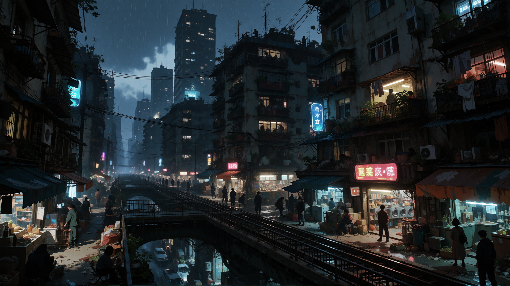

Contains most of Terminal 00's ordinary civilian population. Ranges from relatively comfortable middle-class neighborhoods to overcrowded and impoverished housing complexes. Busy and densely populated. Most citizens are workers who commute to the Crown, Spires, and other parts of the city.
Ordinary civilian life, work, routine, and the pressure of maintaining stability.